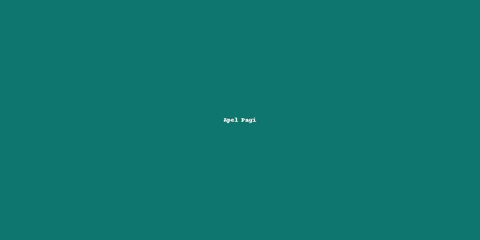

Artikel Sekolah
Kumpulan artikel ringan seputar kegiatan, pembelajaran, dan pengembangan karakter di YPP An-Nur Al-Mustafa. Artikel dapat digunakan sebagai bahan bacaan siswa, orang tua, maupun guru.

Tips Belajar Nyaman dan Fokus di Sekolah
Beberapa langkah sederhana yang dapat dilakukan siswa untuk mengatur jadwal belajar,
mengurangi distraksi gawai, dan menjaga konsentrasi selama mengikuti pelajaran.

Membangun Karakter Islami Sejak Dini
Peran sekolah dan keluarga dalam menanamkan nilai kejujuran, kedisiplinan,
dan tanggung jawab melalui kegiatan ibadah, tugas harian, serta keteladanan guru.

Gerakan Literasi di Lingkungan Sekolah
Pojok baca kelas, program membaca 15 menit sebelum pelajaran dimulai,
serta lomba menulis cerita pendek sebagai upaya menumbuhkan budaya literasi.